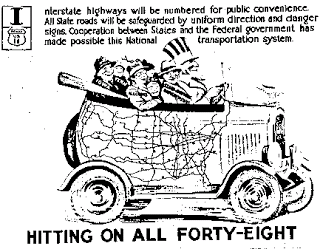

Why don't we liberate these United States,
We're the ones that need it the most.
Let the rest of the world help us for a change,
And let's rebuild America First.
Our highways and bridges are fallin' apart;
Who's blessed an' who has been cursed?
There's things to be done all over the world,
But let's rebuild America First.
Who's on the Hill and who's watchin' the valley?
An' who's in charge of it all?
God bless the Army an' God bless our liberty,
And back-dump the rest of it all.
Yeah, men in position are backin' away: Freedom is stuck in reverse.
Let's get out of Iraq, an' get back on track, and let's rebuild America First.
The deterioration of our infrastructure, a pre-existing condition of which the lethal collapse of the I-35W bridge is a particularly painful symptom, is not a result of inadequate "public financing," as many insist. "Public" -- meaning "government" -- financing always results in skewed priorities.
Given that the I-35W bridge, like the estimated 70,000 or "unsound" or otherwise infirm bridges across the nation, was built and maintained by the State, how can its collapse be considered an example of "market failure," rather than an illustration of the inefficiencies of statism?
To put the matter as plainly as possible: A Regime that spends so much on large-scale destruction of infrastructure abroad is probably not to be trusted with the task of maintaining sound infrastructure at home. The big money and political profit are to be found in reconstruction, after all -- something understood very well by those pioneering the new form of corporatism called disaster capitalism.
Where the hoi polloi sees catastrophe, disaster capitalists -- both those employed directly by the State, and those who work for it as nominally private subcontractors -- see job security. Government, after all, is the only entity that profits through failure, so we shouldn't be surprised to see it fail so spectacularly and so often -- or to see a growing segment of the politically wired-in population learning to capitalize on those failures.
Catastrophe -- or opportunity? It depends on whether you're a private producer, or a statist parasite.

There has been much discussion of the estimate offered by the American Society of Civil Engineers that it would cost $1.6 trillion over five years to upgrade public infrastructure nation-wide. That figure -- give or take the random hundred billion dollars -- is not substantially larger than some estimates of the final costs of the Dullard Dictator's war in Iraq (assuming that we ever get out of Iraq, which would permit us to tally up "final" costs).
From that juxtaposition can flow any number of facile slogans, of the "Less money for bombs, more for bridges!" variety.
Of course government spends much more than necessary on bombs and other instruments of wholesale destruction: The State is in the business of coercion, after all, and this won't change no matter how much is spent on infrastructure. In fact, as the irreplaceable Bill Kauffman points out, the Interstate Highway System (IHS)-- the "greatest public works project in history" -- was conceived as a wartime measure, born as a Cold War institution, and grew to maturity through large-scale dispossession of millions of helpless Americans.
The IHS, writes Kauffman, was "a socialist melding of industry and military that did more than almost any other act of government to uproot Americans. Like so many of Leviathan's projects, the IHS was conceived in wartime. In 1944, Franklin Roosevelt's Interregional Highway Committee recommended that the federal government build a 41,000 mile interstate system."


Collectivist Clown Car: IHS propaganda cartoon didn't mention the costs of federal-state "cooperation" -- such as hundreds of thousands of Americans being uprooted and chased from their homes through "eminent domain."General Eisenhower, who had been tremendously impressed by Hitler's autobahn, embraced FDR's plans: In 1956, Ike signed into law a measure to create the "National System of Interstate and Defense Highways," which was intended to build an American version of Hitler's highway system. The same year brought the creation of the Highway Trust Fund, a malodorous mass of patronage funds stolen at the gasoline pump and used for numerous dishonest purposes -- from masking the size of the budget deficit to paying bribes to sundry constituencies.
The Trust Fund, in fact, is used for practically every purpose except infrastructure maintenance -- such as fixing a bridge known to have serious structural problems, as the I-35W bridge did.
In building Eisenhower's autobahn, Congress exploited one of the Constitution's murkier passages -- the one authorizing the Legislature to establish "post roads" -- and the document's most tragically misconceived provision, the Article V power of eminent domain. Kauffman describes the results:
"The Interstates ... forcibly displaced hundreds of thousands of persons. They uglified vast stretches of America. And hardly anyone in a position of power raised a peep. Scattered farmers, New Englanders, and poets tried to slow down the Interstatists, but they were crushed as thoroughly as a car windshield pulverizes a June bug. The Interstate's bulldozers proved as unstoppable as Soviet tanks rolling into Hungary. Resistance was almost always futile.... By the late 1960s, Interstate construction was displacing 57,000 people per year; 87 percept of the buildings demolished [to facilitate construction] were residences. In one 20-year stretch, 100,000 California houses were destroyed."
I would be interested to learn if more homes were destroyed by Eisenhower's IHS than by the Allied military campaigns he supervised in Europe.
It was during this period that a now-familiar trope was created: Comedy sketches and cartoons began to depict the plight of the intransigent homeowner standing athwart "progress" by refusing to sell his home to permit a freeway to go through. Generally skits and melodramas of that sort invited the audience to shake its collective head in condescension, sympathizing with the non-conformist but understanding that the individual simply must yield to the needs of the Collective Good.
"So shut up and move, demanded the architects of the hugest public works project in history to those protesters who stood on the quaint principle of property rights," continues Kauffman, who concludes with an ironic flourish. "I mean, really: What kind of Commie could possibly dissent from so grand an achievement as the Interstate Highway System?"
The Eisenhower autobahn is an unmixed blessing, we are told, because it helped make "these United States" into One Nation. The IHS offers undeniable advantages: It is useful to know that one can get nearly anywhere in the U.S. by navigating a handful of interstate highways, and the system has been a boon to commercial interests.
But the IHS is a two-way street where accessibility is concerned. It opened new avenues for the regulatory class and activist judges to insinuate themselves in the daily affairs of Americans, generally on the pretext of regulating "interstate commerce" -- which, thanks to the IHS, encompassed practically everything. The system also enhanced the power of Washington to regulate and, eventually, seize outright control over local police and sheriff's departments. And, speaking in purely aesthetic terms, I can't say that the homogenization of American communities brought about because of the IHS is a good or welcome thing.
And now, a little more than a half-century following its birth, the IHS is showing its age in dangerous and frightening ways. There is a certain symmetry in the fact that Eisenhower's "National System of Defense and Interstate Highways" is disintegrating at the same time our military -- having been used for every purpose except national defense -- is collapsing under the burden of Washington's imperial foreign policy.
Please be sure to visit The Right Source, and the Liberty Minute archive.
8 comments:
Will, I went over to the Huckabee campaign site long ago when I found out the HSLDA was endorsing that "clown" for president. One of the truly absurd things I found out, amongst a can full of them, was his statement that he'd "saved the tax-payers of Arkansa... blah blah 300 plus millions of dollars... blah blah blah" All the while he steadfastly supports the war in Iraq that burns through that amount in less than 48 hours! Thats where true insanity shines through. That even "Christian" organizations support mindless statist robots like him tells me that there is little hope for regeneration. The events with the bridge only reveal how the nation is deteriorating from within. There comes a time to pull the plug on the whole sad show, strike the sets and head for home.
The bottom line: As usual, they'll play on fear (in this case, fear of corroding infrastructure) to expand the government and hike the gas tax.
The Interstate along with the public/private "partnerships" known as our major airports were the last nails in the coffin of private passenger rail transportation. What little is left of that once extensive system was also taken over by government and run at a loss. One wonders if there would have been a network privately financed and maintained high speed wonders crisscrossing the country had government simply stayed out of the picture. No doubt, we would also be consuming far less petroleum.
Ah yes, just when we think it's no longer safe to travel, enter the heroes dressed in multi-national corporation togas.
As Jefferson warned, we soon will wake up as slaves in the country our founders fought to set free.
We are a miserable lot, mostly because we don't see it. Pass the gravy please.
This whole sickening and sorry tragedy was, unfortunately, inevitable. Not necessarily for the I-35W bridge in the Twin Cities, but for some bridge/overpass/road, somewhere in the country. This is also not the last time we'll see this happen.
That our nation's infrastructure is collapsing through neglect, corruption, mismanagement, misplaced priorities, and, above all, APATHY is obvious. America just doesn't care about itself anymore. We're a society that has reached a sort of plateau where everyone is just well enough fed, clothed, housed, and employed to a level of comfort that's "good enough." No one sees the need to even maintain and sustain what has already been built over the last century and which we've come to depend on for a modern society without even thinking about it, let alone improve upon it through innovation and the free exchange of ideas and money. As a matter of fact, I seriously doubt that we have the will or the technological know-how to repeat our successes of the last century, at least not without the assistance of third-world engineers and scientists whom we're importing by the thousands even as equally or better-qualified Americans are idled by un(der)employment.
No, America, rather than invest in itself, would rather spend what little is left of its money on foreign military misadventures that enrich the few at the expense of the many or throw money down foreign aid rat holes (think of today's America as the Big Three Automakers of Detroit, circa 1970, writ large).
This must be the same state of affairs that characterized the Roman Empire, circa A.D. 407.
I think Americans are simply too infatuated and enthralled with their fat house, fat vehicles, fat pets, fat bank accounts, fat boob tubes, fat fridges, and correspondingly fat bellies to give a happy about the WHYS or HOWS of anything as long as they continue to get or maintain the above amenities (and more whenever possible). If what I said is even nominally accurate, it's no wonder "job security" is everything to these folk.
Where the hoi polloi sees catastrophe, disaster capitalists -- both those employed directly by the State, and those who work for it as nominally private subcontractors -- see job security.
Will, as I've repeatedly said, it's the commoners who think like this. Today's commoners are doubtless ignorant of Bastiat's "broken window fallacy." And however the commoners are thinking will be prevalent, to an even more intense degree, naturally, in government. But it's also increasingly the thinking of some in the private sector - especially those in the construction (as this event demonstrates), maintenance, repair sectors.
You might be shocked how many folk I run into on any given day who claim they love when equipment "breaks" or becomes inoperable regardless of the cause because it provides "job security." This is NOT only applicable to construction and "overhead" (maintenance/repair) businesses either. It also applies to some degree to genuine producers as well. They don't want to manufacture a product TOO well and/or make it not worth the cost of repairing because, hey, we want the commoners buying our new products as often as possible.
I call all of these perverse incentives in an otherwise healthy drive to make a decent, honest living.
DD:
Nail on the head. The "broken window" fallacy is the driving force behind what passes for an economy in today's Amerika. Nowhere is this more prevalent than in "public works," that state-driven portion of the "national economy" that is becoming more and more the dominant economic engine at the expense of entrepeneurial innovation (I wonder: did the German contractors and laborers of the 1930s who built the Autobahn practice "planned obsolescence", as do all building contractors in Amerika today, guaranteeing future contract work as their deliberately shoddy construction deteriorated a few years hence?) I'm not certain, however, that I agree with your contention that this practice is driven by the masses' embrace of this philosophy. I think it's probably more the reverse, in that the State has done more than its share to inculcate this philosophy into the gullible sheeple (only a tiny fraction of whom have even the slightest comprehension of basic economics), thus creating a willing mass of followers who will be only too willing to let agents of the state assume the reins of economic central planning as long as the gravy train continues to roll.
What this will mean in terms of the I-35W bridge is that its replacement will be built with materials substandard even in comparison with those used to build the original, at a grotesquely inflated cost, and with little or no thought given to the rest of the supporting freeway infrastructure, which is probably in a state of decay equal to or greater than that of the collapsed bridge.
I think it's probably more the reverse, in that the State has done more than its share to inculcate this philosophy into the gullible sheeple (only a tiny fraction of whom have even the slightest comprehension of basic economics), thus creating a willing mass of followers who will be only too willing to let agents of the state assume the reins of economic central planning as long as the gravy train continues to roll.
Hmmm, this is not unlike folk whining about the con artist for scamming the greedy out of their money. Sigh, everyone screams for the con man's head, while ignoring the greedy folk that made the con artist so wildly successful to start with.
Keep in mind that we have a "government of the commoners, by the commoners, for the commoners." Government positions, other than those at the very top of the heap, are filled by your next door neighbor, the man/woman living across the street, etc. They're not estranged from the culture, they don't come from Venus or Mars. The culture produces the politicians, and hence, shapes government, NOT the other way around.
Simply take a gander at all the commercials about "FREE" this or that. Seriously, folk seem to have an entitlement complex, literally. They will demand to be PAID for nothing, by any and all means necessary, including litigation, entitlements, etc., yet do not wish to PAY directly for anything if they can possibly help it.
Evidence of this kind of stuff? Sure! Well, since Will likes to help convey his message poignantly utilizing Youtube, why can't the commenters as well? Take a gander at these:
"FREE" Diabetes Medical Supplies as if Wilford Brimley or this woman here quaintly making a "spot of tea" look really destitute and desperate. But hey, they have MediCare! Yeeeee hah! Every time I see Brimley on that FAT horse yacking or from his country estate yacking about getting your diabetes testing supplies FREE and delivered to your door, my blood pressure rises. Why don't he simply gallop his FAT self on his FAT horse to the pharmacy and BUY his stuff with his FAT wallet? Hmmm....
I have Type 1 diabetes and I BUY all my stuff at the pharmacy and I drive my bony self there to get the stuff. My income is only a tiny fraction of most of the seniors I meet who are evidently too busy spending their ca$h playing golf or tennis at the country club, fishing on the lake, or whatever else, to bother with BUYING and picking up their medical supplies.
Besides, they have Medicare (us) to PAY for it for them, and entities like Liberty Medical to deliver it to their door on our dime.
This Lowell "The Hammer" Stanley lawyer commercial shown often in my local area. You know, I've always thought the REAL thug lawyer, Lowell Stanley, not this made-for-the-booby actor here, is probably a runt. I'd bet that the CA$H part is all the commoners see and hear when they view this cruddy commercial...why?...because of their greed.
There are countless others I'm sure that others could supply, but the central theme throughout is either enrichment through litigation (you're PAID something for nothing) or an entitlement of some sort (you PAY nothing for something) even though one lives a life of riley! Riding FAT horses and living in FAT houses.
This is a tiny microcosm of today's Amerika, unfortunately.
Post a Comment